Manage Gate Pass In, Gate Pass Out and visitor entry with integrated sales, purchase and inventory workflows
Affinity Gate Pass is an Odoo warehouse gate pass and visitor management application that connects physical gate operations with Sales, Purchase and Inventory. It creates traceable incoming and outgoing gate passes linked to receipts and delivery orders, helping security, warehouse and operations teams work from the same records.
The application supports Gate Pass In for purchased goods, Gate Pass Out for delivered goods, guest and vehicle entry records, controlled status transitions, searchable history and printable PDF reports.
Generate an incoming gate pass from a confirmed purchase order and connect it with the warehouse receipt.
Create an outgoing gate pass for a completed delivery and retain the customer, items and delivery reference.
Record visitor identity, company, contact details, vehicle number, visit purpose and check-in or check-out time.
Require the associated Gate Pass In before validating an incoming receipt and the completed delivery before marking goods Out.
Find incoming, outgoing and guest passes through dedicated menus, filters, statuses and partner references.
Print professional PDF reports for Gate Pass In, Gate Pass Out and Guest Pass records.
Confirm the sales order, validate the delivery, issue the outgoing gate pass and retain a complete record of goods leaving the premises.
Confirm the quotation so Odoo creates the related warehouse delivery operation.
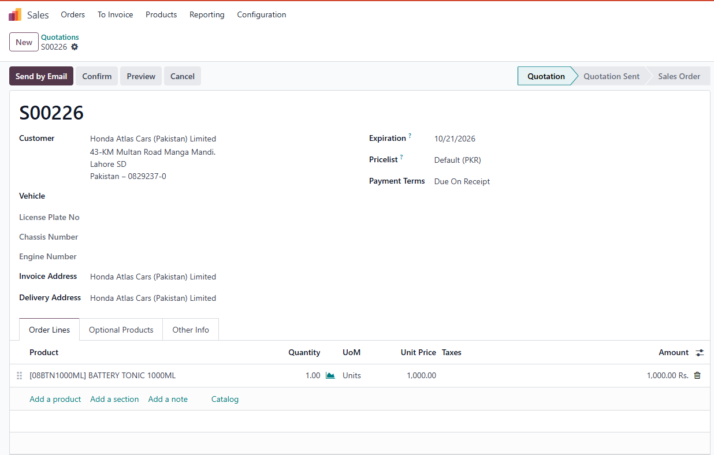
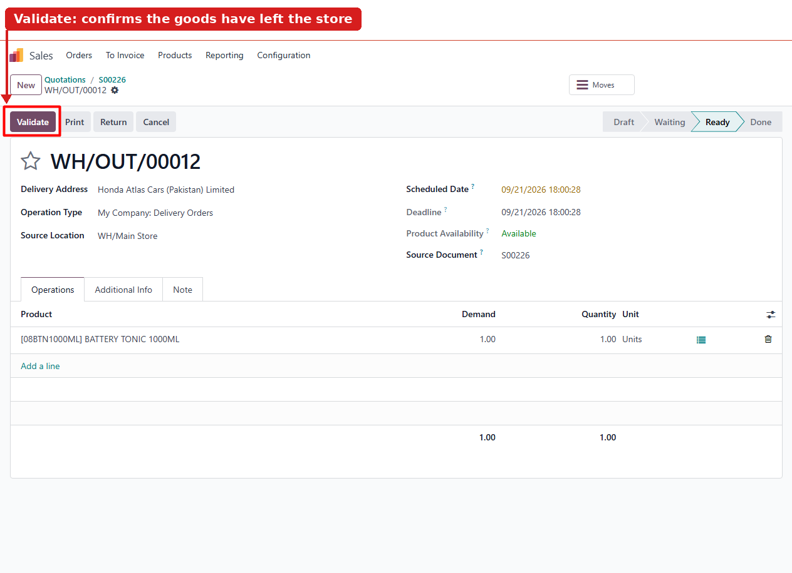
Process the delivery after the warehouse confirms product availability and the goods are ready to leave.
Access the linked Gate Pass Out directly from the completed delivery operation.
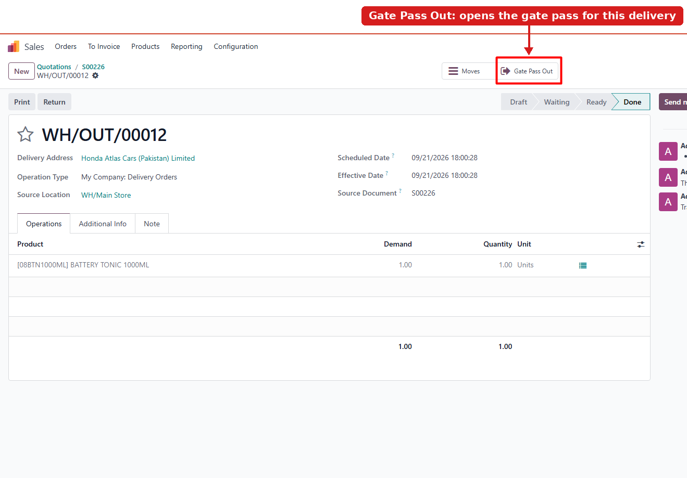
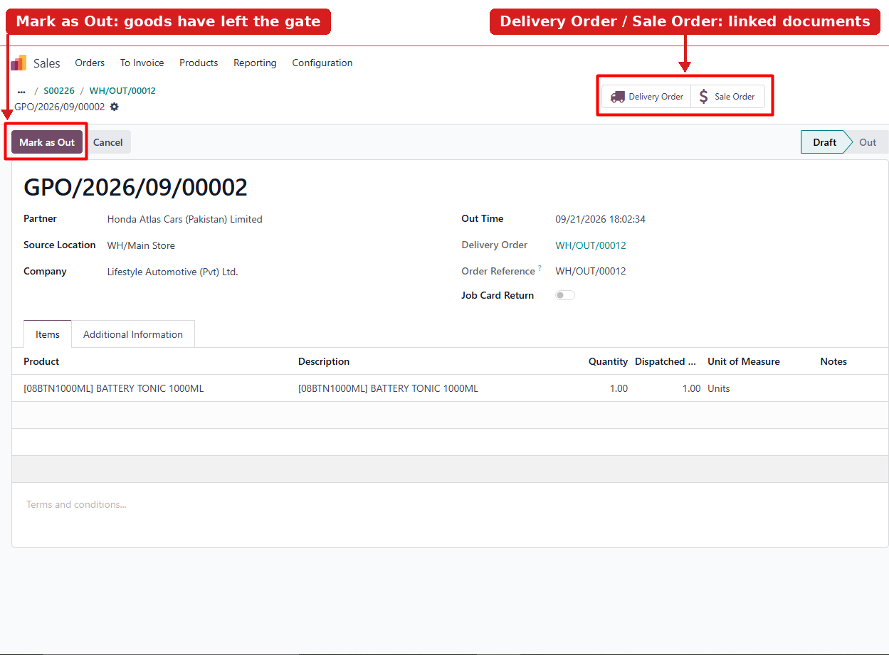
Review the customer, delivery and product details, then mark the pass as Out when the goods cross the gate.
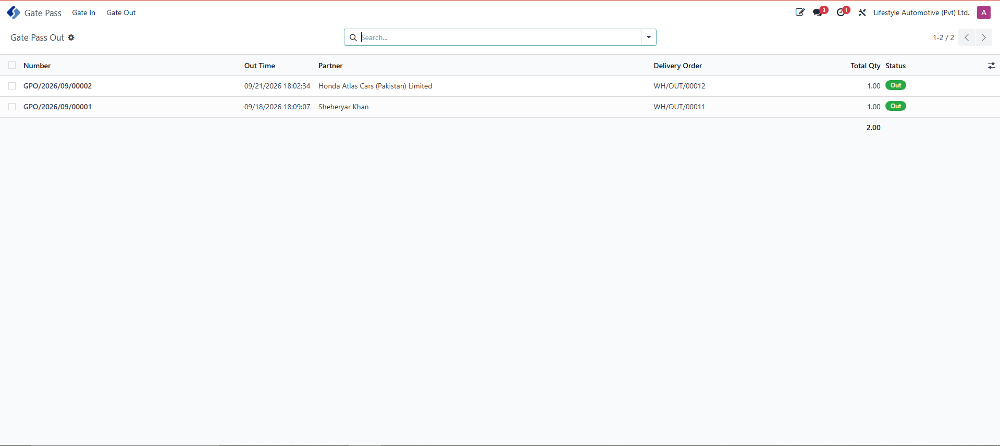
Review current and historical outgoing gate passes from the dedicated Gate Out menu.
Connect purchase receipts with gate entry control so incoming goods are authorized before warehouse validation.
Confirm the RFQ to create the incoming receipt and its linked Gate Pass In record.
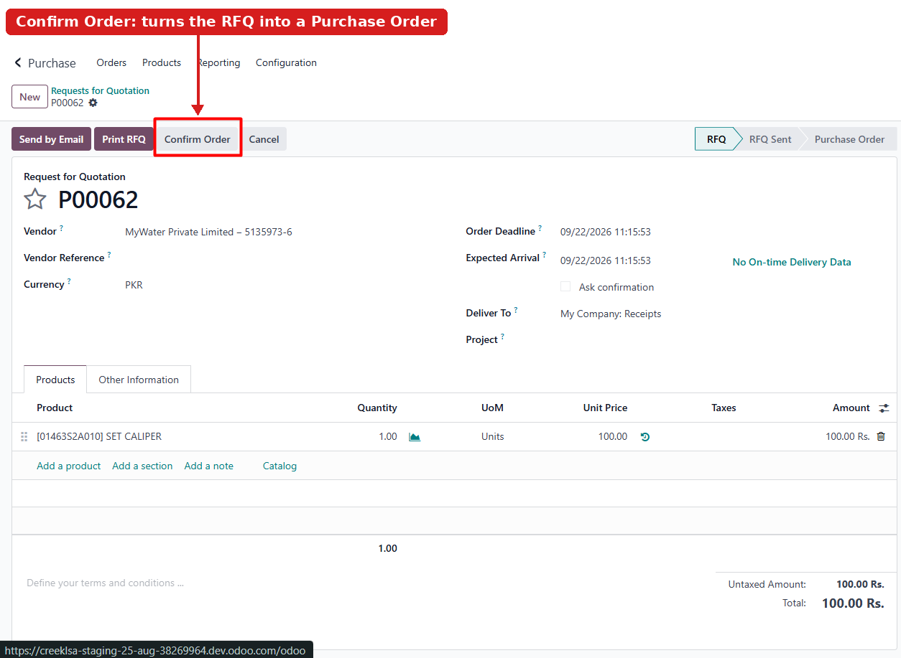
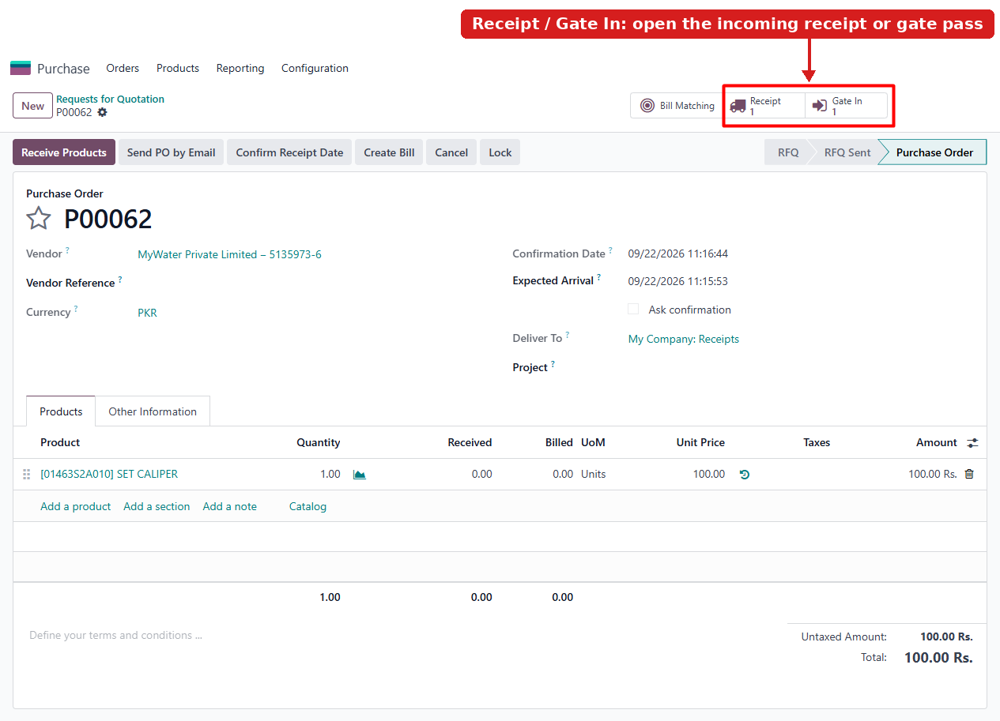
Open the Gate Pass In directly from the purchase order or related receipt.
Review supplier, receipt, warehouse location and item details before confirming that the goods entered the premises.
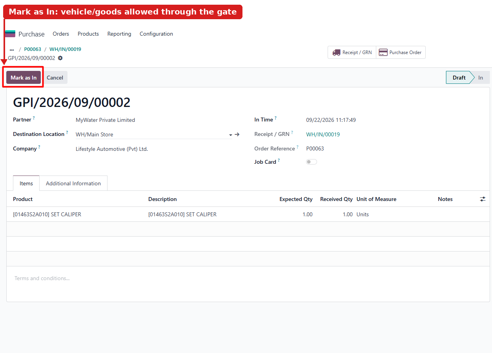
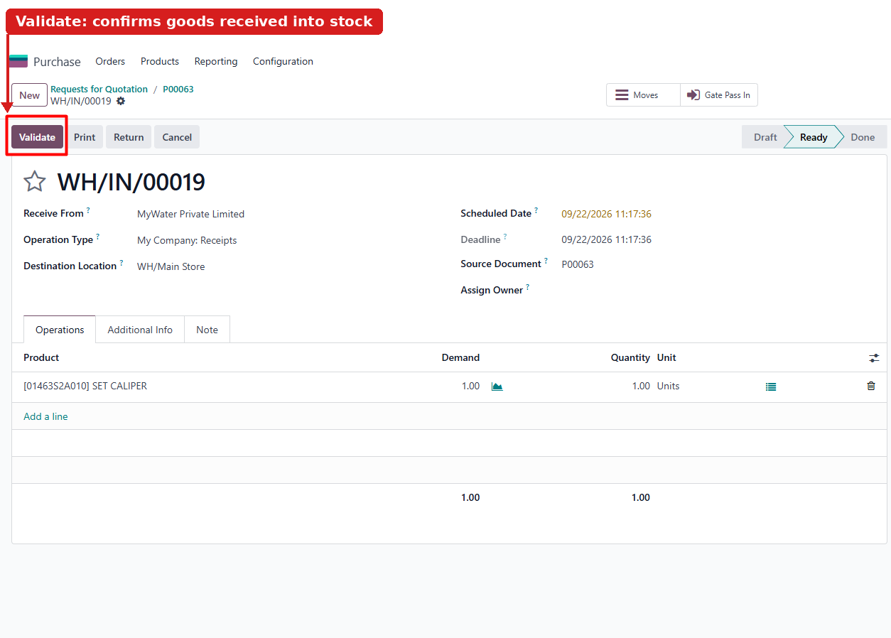
Complete the receipt after the associated gate pass has been confirmed as In.
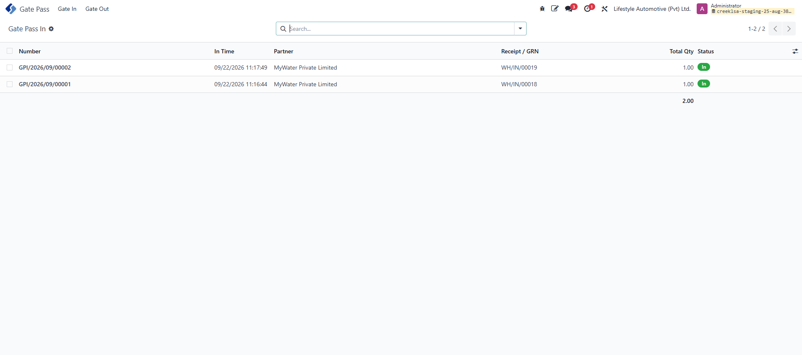
Monitor pending and completed incoming passes from the Gate In menu.
Maintain an organized visitor register with unique pass numbers, contact information, organization, vehicle details, visit purpose and entry or exit times.
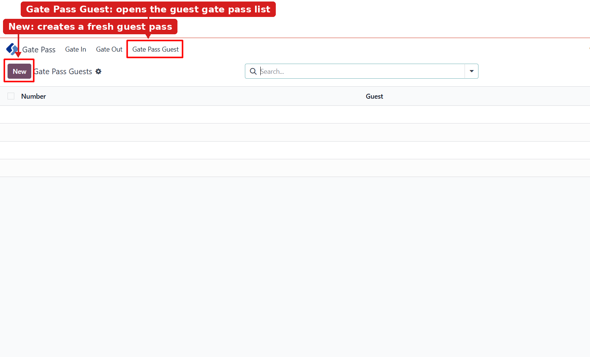
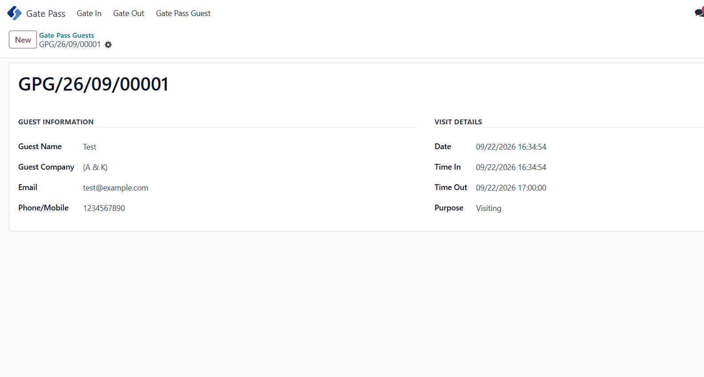
Affinity Business Suite is an Odoo Gold Partner delivering end-to-end ERP implementation, customization, integration, training and ongoing support. Our experience spans healthcare, NGOs, textiles, manufacturing, pharmaceuticals and other industries.
Our work was recognized through a nomination for Best Starter - MENA Region at Odoo Experience 2021.
Connect with our Odoo specialists for a personalized demonstration of warehouse Gate Pass In, Gate Pass Out and visitor management.
Schedule a DemoFor assistance, contact Affinity Business Suite:
Website: https://affinitysuite.net
Support Email: info@affinitysuite.net